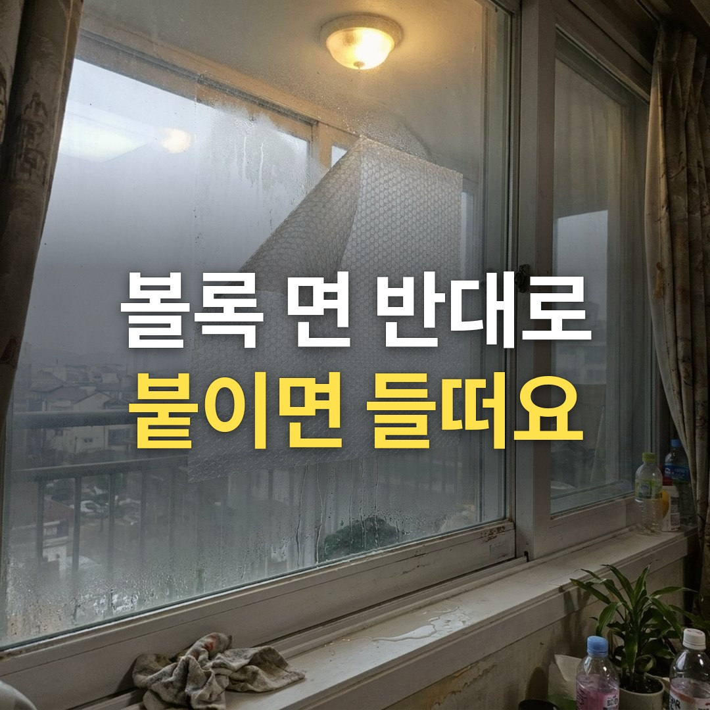
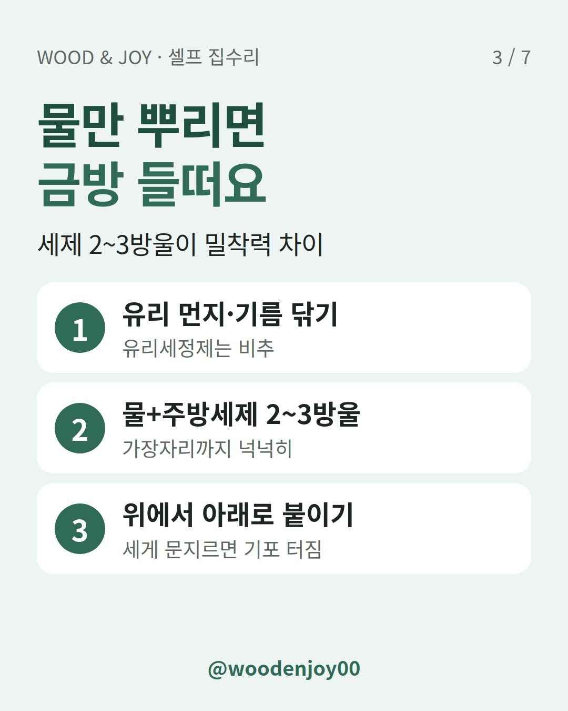

이 포스팅은 쿠팡 파트너스 활동의 일환으로, 이에 따른 일정액의 수수료를 제공받습니다.
아침에 창문을 보면 뽁뽁이 귀퉁이가 들려 있고 창틀엔 물이 고여 있어요. 다시 붙여도 며칠을 못 버팁니다. 뽁뽁이가 불량이라서가 아니라 붙이는 면이 반대였거나, 물만 뿌렸기 때문일 수 있어요.
결론부터 말할게요. 택배 뽁뽁이(한쪽만 볼록)는 볼록한 면을 유리 쪽으로 붙여요. 창문용 단열 뽁뽁이는 포장에 적힌 부착면대로 붙이면 됩니다. 여기에 분무기 물에 주방세제 2~3방울, 창문 안쪽에 2겹. 이 세 가지면 들뜨는 일을 줄일 수 있어요.

먼저 제품 구조를 봐야 해요. 에어캡 제조사 아성산업에 따르면 일반 포장용 에어캡은 평평한 필름 + 기포 필름 2겹이에요. 단열용은 용도에 따라 3겹 구조나 물부착·자가점착 방식으로 따로 만듭니다. 생긴 게 다르니 붙이는 면도 달라져요.
| 종류 | 생김새 | 유리에 닿는 면 | 물 |
|---|---|---|---|
| 택배 뽁뽁이 | 한쪽 볼록, 한쪽 평평(2겹) | 볼록한 면 | 세제물 분사 |
| 창문용 단열 뽁뽁이(물부착형) | 양면 평평(3겹 등) | 제품에 표시된 부착면 | 세제물 분사 |
| 자가점착 뽁뽁이 | 한쪽에 점착면 | 점착면 | 필요 없음 |
현장 팁: 단열 뽁뽁이는 자르기 전에 포장에 있는 부착면 표시부터 확인해 두세요. 재단하고 나면 양면이 똑같아 보여서 구분이 어려워요.
물이 부족하거나 유리가 깨끗하지 않으면 금방 들떠요. MBC 안내에 따르면 분무기 물에 주방세제 2~3방울을 넣으면 맹물보다 밀착력이 높아집니다. 세제 대신 문구용 물풀을 조금 넣어도 비슷하대요.
뜻밖의 함정도 하나 있어요. 세계일보 칼럼은 유리 세정제로 닦으면 오히려 잘 안 붙을 수 있다고 짚어요. 닦는 건 먼지와 기름기를 없애는 데까지만 하면 됩니다.

하나라도 비면 붙인 뒤에 들뜨기 쉬워요.
인터넷엔 바깥쪽에 붙이라는 글도 있어요. 공공기관 안내는 다릅니다. 농촌진흥청 웹진(참고자료 한국에너지관리공단)은 창문 바깥쪽보다 안쪽에, 1겹보다 2겹을 붙이는 게 단열에 효율적이라고 안내해요.
창틀까지 덮을지는 의견이 갈려요. 창틀까지 막으면 작은 틈으로 들어오는 바람을 줄인다는 기사가 있습니다. 반면 건국대병원 가정의학과 교수는 창틀이 막히면 환기가 안 돼 세균·미세먼지로 건강을 해칠 수 있다고 주의를 줬어요. 창틀까지 덮었다면 환기 시간은 따로 챙기세요.
사실 틈바람은 뽁뽁이보다 문풍지가 맡는 영역이에요. 바람이 어디로 들어오는지 모르겠다면 문풍지 사기 전에, 향 하나로 바람 들어오는 틈부터 찾으세요부터 보세요. 틈을 찾았으면 그 길이에 맞춰 문풍지를 붙이면 돼요. 현관 쪽 바람이라면 문이 끝까지 안 닫히는 건 아닌지 도어클로저 속도 조절, 현관문이 덜 닫힐 때 나사 2개만 보세요도 같이 확인해 보세요.
딱 몇 도라고 말하기는 어려워요. YTN이 보도한 비교 실험에서 아무것도 안 붙인 창문은 표면온도 15.3도였고, 30분 뒤 에어캡을 붙인 창문은 18.1도였어요. 이건 실내 공기온도가 아니라 창 표면온도예요.
제조사도 효과는 유리 종류, 창호 상태, 틈새바람, 시공 상태에 따라 달라지고 창호 전체의 단열 성능을 대신하지는 않는다고 설명해요. 인터넷에 도는 '창틀에 붙이면 3도', '난방비 30% 절약' 같은 숫자는 연구기관이나 실험 조건을 밝힌 자료를 찾지 못해서 이 글엔 넣지 않았어요.
난방비를 아끼려면 온도 설정도 같이 봐야 해요. 같은 웹진은 보일러 난방 온도를 20도 이하로 두라고 권해요. 20도를 넘기면 최대 20% 에너지를 더 쓴대요.
| 상황 | 셀프 | 업체 상담 |
|---|---|---|
| 유리가 차갑고 창가가 썰렁함 | 뽁뽁이 2겹 | - |
| 문틈·창틈으로 바람이 느껴짐 | 문풍지 | - |
| 창짝이 흔들리거나 잠금이 헐거움 | - | 창호 점검 |
| 유리와 창틀 사이 실리콘이 갈라짐 | - | 창호·실리콘 보수 |
| 결로로 벽지에 곰팡이가 번짐 | - | 단열·곰팡이 전문 상담 |
뽁뽁이는 유리면 냉기를 줄이는 보조 수단이에요. 창틀 자체가 상했다면 붙이는 걸로는 해결이 안 됩니다.
Q. 택배 상자에서 나온 뽁뽁이도 써도 되나요?
써도 돼요. 볼록한 면을 유리 쪽으로 붙이면 됩니다. 다만 단열용 제품과는 구조가 다르니 두께나 겹 수는 차이가 있어요.
Q. 한 번 떨어진 자리에 다시 붙여도 되나요?
유리를 닦고 물을 다시 뿌려 붙일 수는 있어요. 그래도 한 번 떨어진 곳은 오래 못 간다는 설명이 많아요. 오래 붙여 둬서 비닐이 딱딱하게 굳고 부서진다면 새것으로 바꾸는 게 나아요.
Q. 세제를 많이 넣으면 더 잘 붙나요?
안내된 양은 2~3방울이에요. 그보다 많이 넣었을 때 효과는 확인된 자료가 없어서 권하지 않아요.
여러분 집 뽁뽁이는 택배용인가요, 단열용인가요? 붙였다가 떨어진 적 있다면 어느 창이었는지 댓글로 알려 주세요.